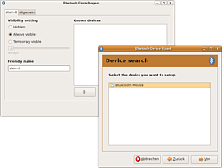
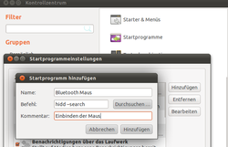

Wiki
Mitmachen
- Wikiartikel anlegen
- Howto anlegen
- Wiki-Referenz
- Wiki-Syntax
- Baustellen
- Artikelideen
- Ungetestete Artikel
- Ausbaufähige Artikel
- Fehlerhafte Artikel
- Rund ums Wiki
Konfiguration
- Backlinks anzeigen
- Exportieren
Eingabegeräte
Archivierte Anleitung
Dieser Artikel wurde archiviert, da er - oder Teile daraus - nur noch unter einer älteren Ubuntu-Version nutzbar ist. Diese Anleitung wird vom Wiki-Team weder auf Richtigkeit überprüft noch anderweitig gepflegt. Zusätzlich wurde der Artikel für weitere Änderungen gesperrt.
Zum Verständnis dieses Artikels sind folgende Seiten hilfreich:
Bluetooth kann nicht nur zum Datenaustausch zwischen mobilen Geräten oder zum Anbinden von Headsets benutzt werden, sondern auch zum kabellosen Anschluss von Eingabegeräten wie Tastaturen und Mäusen.
Im Folgenden wird die Verbindung einer Bluetooth-Maus mit einem Ubuntu beschrieben. Die Anbindung einer Bluetooth-Tastatur sollte entsprechend zu bewerkstelligen sein.
GNOME¶

Mittlerweile wurde es deutlich vereinfacht, Geräte per Bluetooth einzubinden. Klickt man auf das Bluetooth-Symbol im Panel, so erscheint gleich ein Feld "Setup new device...". Wählt man dieses aus, so wird gleich ein Assistent zum Einbinden eines neuen Bluetooth Gerätes gestartet. Alternativ kann man diesen über
"System -> Einstellungen -> Bluetooth" und die Schaltfäche mit dem "+" erreichen.
Nun versetzt man das BT-Eingabegerät in den Pairing-Modus und lässt den Assistenten nach Bluetooth-Geräten suchen. Nach kurzer Zeit sollte das Gerät gefunden werden. Nun wählt man das gefundene Gerät aus und beendet den Assistenten. Das Eingabegerät sollte von nun an immer automatisch eingebunden werden.
Terminal¶
Benutzt man eine andere Desktopumgebung, so muss man die Konfiguration der Maus über ein Terminal machen. Dies ist auch ein Ansatz, falls der Verbindungsversuch per Menü scheitert.
Konfiguration¶
Unter aktuellen Ubuntu-Versionen muss man keine Konfigurationen vornehmen.
Verbindung aufbauen¶
Nun kann die Verbindung aufgebaut werden. Dazu muss die Maus in den Pairing-Modus gesetzt werden. Meist geschieht dies durch längeres Halten eines kleinen Knopfes auf der Unterseite der Maus.

Bluetooth Maus automatisch beim Start verbinden¶
Viele Nutzer klagen darüber das die BT-Maus sich nicht automatisch nach einen Neustart verbindet. Dazu muss z.B. über Synaptic-Paketverwaltung das Paket "bluez-compat" installiert werden. Dann unter System-Einstellungen-Systemprogramme einen neuen Eintrag hinzufügen und als Befehl "hidd --search" eintragen. Name und Kommentar kann man beliebig wählen. Von nun an sollte die Maus sich automatisch beim starten verbinden. In 11.04 Natty Narval unter "Systemverwaltung->Startprogramme" auf "Hinzufügen" klicken. Dann im Formular unter Befehl "hidd --search" eintragen, Name kann beliebig gewählt werden.
Diese Revision wurde am 27. Februar 2012 07:20 von frustschieber erstellt.
- Erstellt mit Inyoka
-
 2004 – 2017 ubuntuusers.de • Einige Rechte vorbehalten
2004 – 2017 ubuntuusers.de • Einige Rechte vorbehalten
Lizenz • Kontakt • Datenschutz • Impressum • Serverstatus -
Serverhousing gespendet von